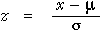

The 70-95-100 rule for normal distributions
Any probability (proportion or area) relating to a normal distribution can be translated into a probability (area) for a standardised normal distribution. Standardisation translates an X-value into a Z-value that expresses it as a number of standard deviations from its mean.

This equation can also be written in the form:
x = μ + z × σ
An important consequence is that the probability of getting a value within k standard deviations of the mean is the same for all normal populations. In particular:
- P(value within 1 standard deviation of the mean) is approx 0.68
- P(value within 2 standard deviations of the mean) is approx 0.95
- P(value within 3 standard deviations of the mean) is approx 0.997
It is especially worth remembering that approximately 95% of values in a normal population are within 2 standard deviations of the distribution's mean. To be more precise, exactly 95% of values in a normal population are within 1.96 standard deviations of the mean.
Drag over the normal probability density to read off the probabilities of getting a values within 1, 2 and 3 standard deviations of the mean.
Use the popup menu to the right of the graph above, to check that the same results hold for other normal populations.
The 70-95-100 rule of thumb for data sets
The 70-95-100 rule was written for normal distributions. However it also holds approximately for many real data sets.
- Approximately 70% of the values are within 1 standard deviation of the mean.
- Approximately 95% of the values are within 2 standard deviations of the mean.
- Nearly all of the values are within 3 standard deviations of the mean.
The 70-95-100 rule holds approximately for most reasonably symmetric data sets. However for skew data, or data sets with long tails, outliers or clusters the rule is likely to be less accurate.
In the diagram below, the blue line is centred on the mean and its length is one standard deviation. In other words, the line is mean ± 0.5 standard deviations.
Click the button Sample a few times to generate some similar data sets.
Now use the lower pop-up menu to display the mean ± one standard deviation. Take a few more samples and observe that approximately 70% of the values are within these limits.
Repeat with displays of the mean ± two and three standard deviations, verifing that approximately 95% and 100% of data values are within the limits.
Use the pop-up menu on the right of the display to repeat the exercise with batches of skew data. Observe that the 70-95-100 rule is less accurate when the data do not have a reasonably symmetric distribution.
Guessing the standard deviation from a histogram
People usually find the standard deviation a difficult concept. Luckily, understanding its definition is much less important than knowing its properties and having a feel for what its numerical value means.
If you have understood the 70-95-100 rule, you should be able to make a fairly accurate guess at the standard deviation of a batch of values from a histogram or dot plot (without doing any calculations). About 95% of the values should be within 2 standard deviations of the mean, so after dropping the top 2.5% and bottom 2.5% of the crosses (or area of the histogram), the remainder should span approximately 4 standard deviations. So dividing this range by 4 should approximate the standard deviation.

Sketching a histogram from a mean and standard deviation
Similarly, given the mean and standard deviation for a data set, you should be able to draw a rough sketch of a symmetric histogram with that mean and standard deviation. (It would be centred on the mean and 95% of the area would be within 2 standard deviations of this.)